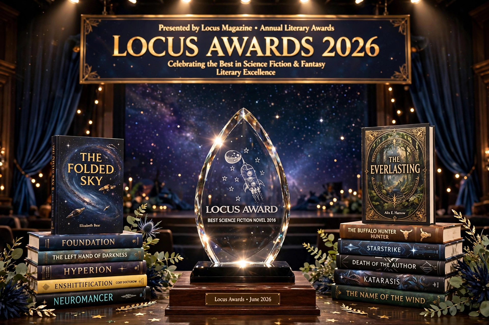

The Locus Awards are annual literary awards for science fiction and fantasy, presented by Locus magazine since 1971 and voted on by readers. They are among the field's major honours alongside the Hugo Award and Nebula Award.

Originally a poll to give Hugo voters guidance, the awards grew into a broad reader-voted survey covering novels, short fiction, collections, magazines, publishers and artists.
Categories have included Science Fiction Novel, Fantasy Novel, Horror Novel, Young Adult Book, First Novel, Novella, Novelette, Short Story, Anthology, Collection, Magazine, Publisher, Editor and Artist.
Frequent winners include Ursula K. Le Guin, Connie Willis, China Miéville and Neil Gaiman.